2022/05/08
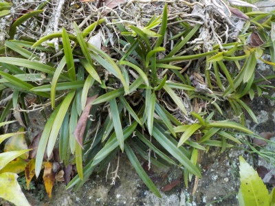
ホームセンターで風蘭が販売しているのを見ました。植木鉢で育てれるんですね。
岩や木に張りついて育つものだと思っていました。
この岩に付いてる風蘭の一部を切って、鉢に植えてみようかな。
更新日 : 2022/05/22
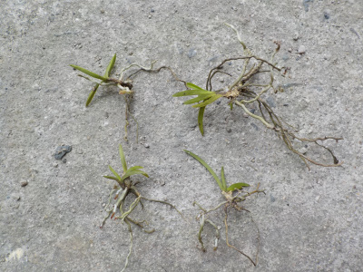
岩に付いてた風蘭の塊から、小さいのを取りました。
ハサミを使って切り取るものかと思っていたんですが、手でほぐしながら根っこを引っ張ったらポロって取れました。
根っこは軽くからまってるだけで、簡単に外れました。
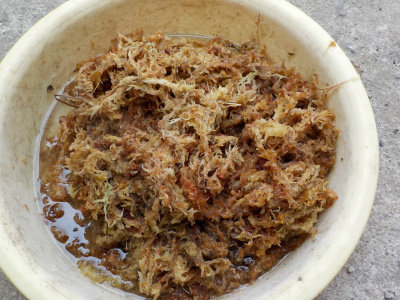
ホームセンターで買ったミズゴケは三日前から水に漬けてたのでふにゃふにゃです。
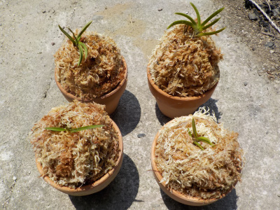
丸めた鉢底ネットに風蘭を乗せて、ミズゴケを巻きつけて鉢の中に入れました。
ちょっと高くなりすぎて不格好ですね。
これがすくすく育つといいんですが、どうでしょうね。
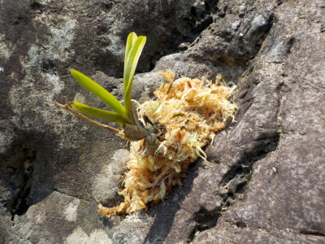
ミズゴケがまだ余っているので、岩のくぼみに風蘭を植えました。
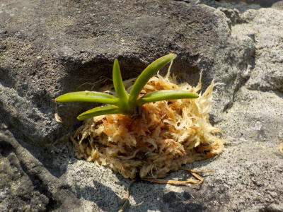
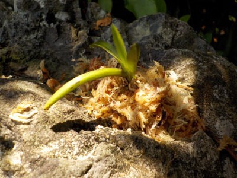
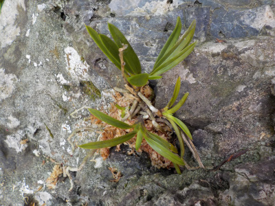
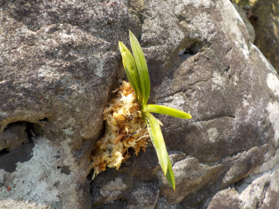
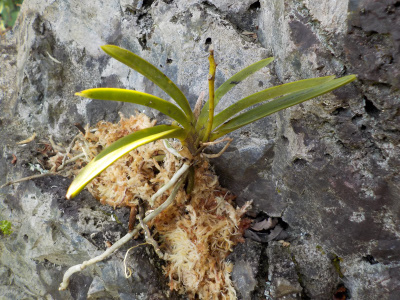
岩には6本植えました。
ミズゴケなしでも岩や木の上で育っているのに、ミズゴケって本当に必要なのかな？
ミズゴケがあると成長が超速くなるくらいの特典があって欲しいな。
更新日 : 2022/06/27
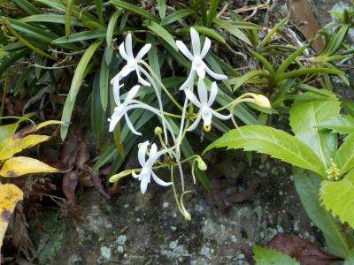
白いのと繊細なところが日本人受けするんだろうな。
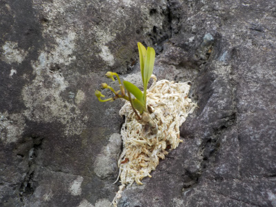
先日石にくっつけた小さい風蘭はまだつぼみ状態です。
こんなに小さくても花が付くんですね。
更新日 : 2022/06/28
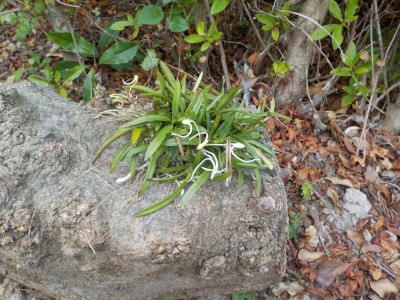
木の上にくっついてた風蘭を取って、丸太の上に乗せました。
木の側面に付けて糸で固定するタイプをネットで見るんですが、私は横より上のある方が好きだな。
更新日 : 2022/07/10
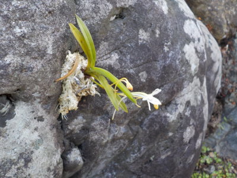
植え付けで1月半くらいなので、ちゃんと開花するか不安でした。ちゃんと咲いて良かったです。
今のところ枯れずにいるので、このまま育ちそうです。
後は酷暑が来た時に耐えれるかが問題ですね。
2022/07/15
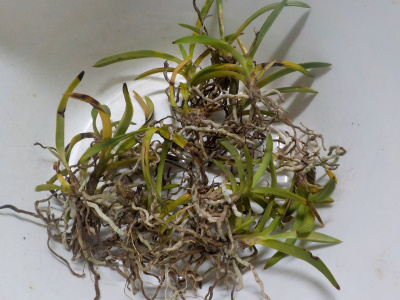
先日、丸太の上に置いた風蘭ですが、置場が悪かったみたいで葉焼けしました。
他の場所に植えるなら、小さい方が都合が良さそうなのでバラバラにしました。
更新日 : 2022/07/17
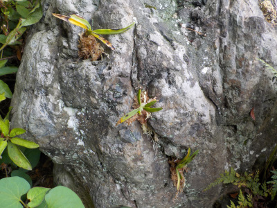
小さくバラバラにした風蘭をアチコチの岩のくぼみに詰めました。
水やりなしで勝手に育ってくれるといいんだけどなー。
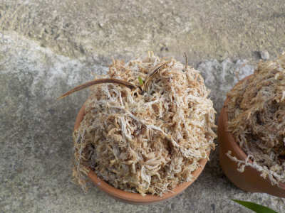
鉢に植えた風蘭が1つ枯れたかな？多分水不足。
更新日 : 2022/08/20
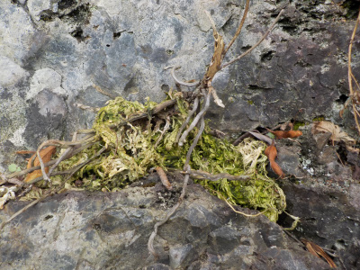
この風蘭は枯れました。ミズゴケが緑になってるってことは水分が多かったってことですね。
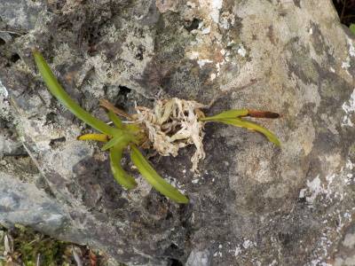
こっちは元気に育っています。ミズゴケは緑になっていないですね。
風蘭は水分が多いとダメなんだなーと実感しました。水が溜まらない場所で、少量のミズゴケを付けておくのが良さそうです。
更新日 : 2022/10/23
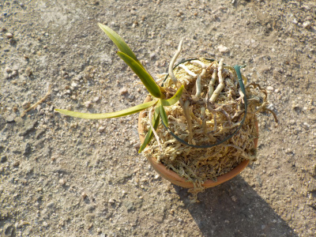
以前に風蘭を植えていた鉢ですが、枯れてしまいました。ずーっと放置していたんですが、これはこのまま活用出来るんじゃないかなーと、風蘭を乗せました。
個人的には風蘭の根っこが水苔で隠れているよりも、表面で見えてる方が好きです。
これで育ったらうれしい。水苔の中と上とで、どっちが成長がいいでしょうね。
更新日 : 2023/05/16
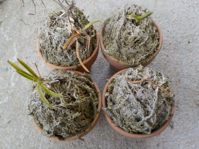
1年くらい前に植えた風蘭ですが、枯れてしまったり枯れそうな状態になっています。
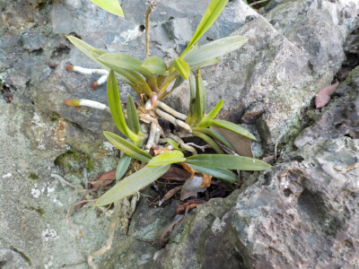
庭石に詰めただけの風蘭の方が元気です。
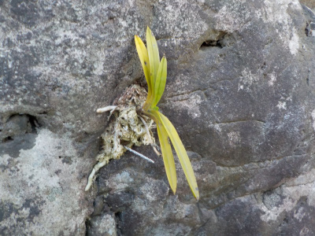
自然にまかせて何もしない方が良かったようです。
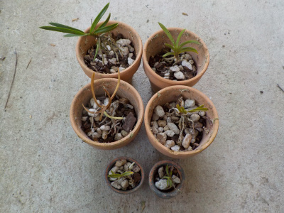
でも放置してたら育てる楽しみが薄いです。
風蘭の数を増やして、ちょっと環境を変えて再挑戦しました。
何の根拠もありませんが、鉢にシンビジウム用の土を少しいれて育てることにしました。。これですくすく育つといいな。
更新日 : 2023/07/09
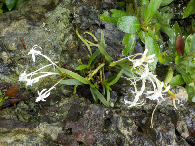
特に何か世話をしているわけではないですが、自分が石の上に置いた風蘭が成長するのはうれしい。
園芸品種を買って育てようとは思わない。
【おいしいものを食べよう。】【たくさん寝よう。】
【ソロ活をしよう!】【季節感のあることをしよう。】【動画視聴はほどほどに。】【当サイトの全てのコンテンツは無断転載禁止です。】